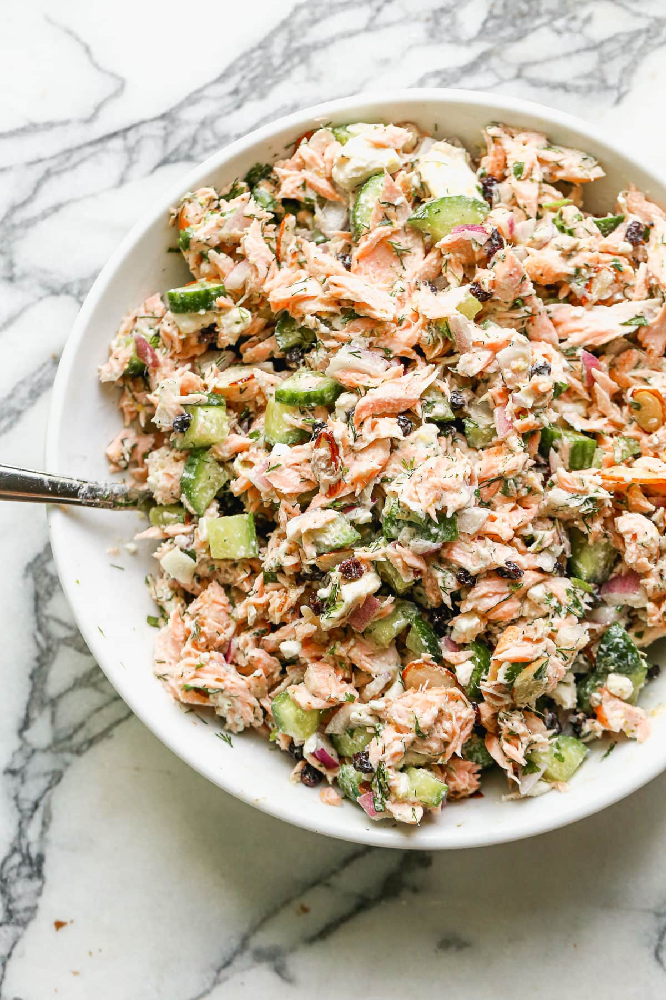

Ingredients for salmon salad
Make a tasty Salmon Salad

Here’s a fun way to mix up lunch with a spin on a deli-style favorite: Salmon Salad! It’s a creamy, crunchy mix of tangy flavors: just like Tuna Salad
but using canned salmon.
Or, use it as a smart way to revitalize leftover salmon! The flavor is savory and satisfying, and this recipe has a healthy spin with less mayo. You can also class it up for a fancy brunch and serve it with fresh herbs on a croissant.
It takes just 5 minutes, and works with crackers, in lettuce wraps, in a sandwich, and more. Lunch just got tastier!
Ingredients for salmon salad